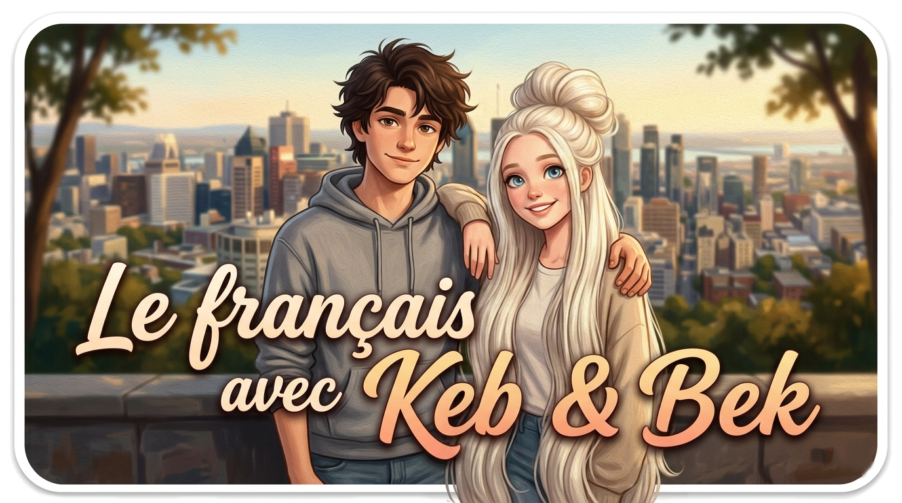

Un projet original · Montréal, Québec

Un cours de français raconté à travers une histoire vraie (presque).
Psst… tu as trouvé un titre caché !
Entre ce code dans Le charriot, sur la page Bravo. Le mot de passe sera demandé une fois sur la page du titre. L'autocollant se remettra à l'endroit dans 30 secondes — tu pourras toujours revenir cliquer à nouveau.
Aller dans Le charriotApprends le français comme si tu y étais.